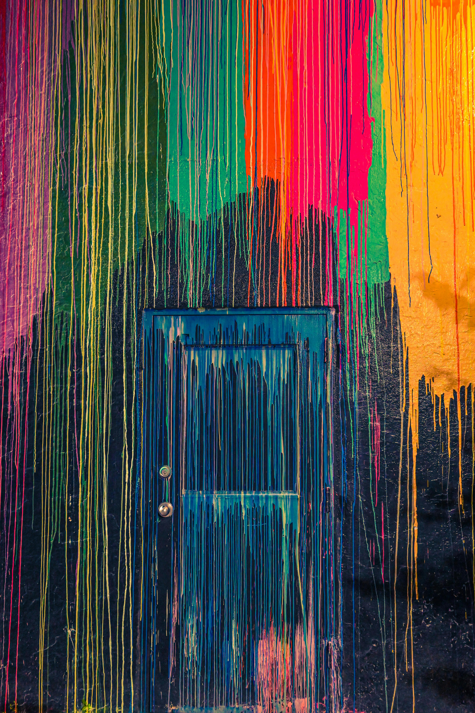

Licencia Creative Commons Zero (CC0).
La técnica del óleo, es uno de los métodos pictóricos más tradicionales, prestigiosos y versátiles de las artes visuales. Consiste en pintar utilizando pigmentos en polvo aglutinados con un aceite secante (generalmente aceite de linaza o de cártamo). A diferencia de las técnicas acuosas, el óleo destaca por su lentitud de secado, lo que permite al artista trabajar la obra durante días, fundir los colores directamente sobre el lienzo (degradados suaves) y realizar correcciones o modificaciones con absoluta libertad.
Principales características
- Tiempos de secado muy lentos: Al secarse por oxidación (absorbiendo oxígeno del aire y no por evaporación), la pintura permanece fresca y maleable durante días o incluso semanas, facilitando la técnica del alla prima (pintar en una sola sesión) o el trabajo por capas superpuestas.
- Riqueza cromática y profundidad: Permite lograr colores sumamente intensos, texturas ricas (desde capas muy finas y translúcidas llamadas veladuras hasta capas gruesas y empastadas con relieve) y un brillo natural muy duradero.
- Flexibilidad de corrección: Al tardar tanto en secar, el artista puede retirar pintura, corregir trazos o difuminar bordes directamente sobre el soporte con total comodidad.
- Evolución del color: A diferencia del acrílico (que oscurece ligeramente al secar), el óleo mantiene un tono muy estable, aunque requiere una buena imprimación del soporte para evitar que el aceite con el tiempo dañe el papel o la tela.
Materiales Necesarios
- Pinturas al óleo (Tubo): Pigmentos molidos con aceite. Se pueden adquirir en tubos individuales (de diferentes tamaños y calidades, desde gamas de estudio hasta gamas profesionales de bellas artes).
- Soporte de pintura:Lienzo: Bastidor de tela (algodón o lino) preparado con una imprimación especial (gesso) para evitar que el aceite penetre directamente en la tela y la pudra. Tableros entelados o cartón preparado para óleo (ideales para prácticas o formatos pequeños).
- Pinceles y espátulas: Pinceles de cerda dura (cerda de cerdo): Perfectos para aplicar pintura espesa y trazos marcados. Pinceles de pelo suave (marta o sintéticos finos): Ideales para difuminados suaves, detalles y veladuras. Espátulas de pintor: Muy útiles tanto para mezclar los colores en la paleta como para aplicar texturas pastosas directamente sobre el lienzo.
- Disolventes y medios (Líquidos): Aguarrás mineral sin olor (o esencia de trementina): Se utiliza para limpiar los pinceles y diluir las primeras capas de pintura (haciéndolas más líquidas y de secado rápido). Aceite de linaza: Se añade a la mezcla para dar mayor fluidez, brillo y retrasar ligeramente el secado en las capas superiores.
- Elementos auxiliares: Paleta de mezclas: Tradicionalmente de madera, aunque hoy en día se usan de vidrio o plástico plano, ideales para limpiar con facilidad. Cazoletas o godets: Pequeños recipientes metálicos que se enganchan a la paleta para contener el disolvente y el aceite mientras se pinta. Trapos o papel de cocina: Indispensables para limpiar constantemente los pinceles y la espátula.
Para comprender más sobre el tema observa el siguiente video:
Para comprender más sobre el tema analiza la siguiente información:

¡Es tu turno, realiza la práctica de acuerdo a las indicaciones de tu maestro!